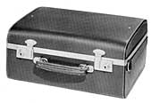
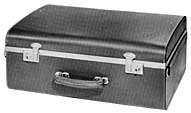
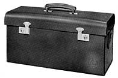
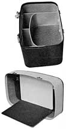
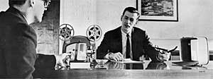
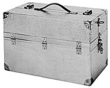

Cases

H-1BThe H-1B was introduced in 1962. [1] Similar to the H-1A, the B version was slightly larger at 14 1/2" x 11" x 6 1/2". The case was designed to accommodate 100' H cameras with room available for film and small accessories. Two latches with key lock were added and a leather shoulder strap was included.
1 Bolex Reporter, Vol. 12, No. 2, 1962-1963, 21.

Omnibolex BThe Omnibolex B case, introduced in 1962, was designed to hold H cameras equipped with a Declic H handle, as well as zoom lenses, such as the Vario Switar 86, Angenieux 120 or Pan Cinor 85. [2] Extra compartments held film, accessories and documents. Size 20" x 14 1/2" x 8"
2 "Perfect 16mm Professional Team," Bolex Reporter, Vol. 12, No. 2, 1962-1963, 29.

Zoom Camera CaseAlthough it was designed to hold H-16 cameras with larger zoom lenses attached, it could also hold any combination of H-8 and lenses. [3] The case was similar to the Omnibolex B, but with less compartment space and no room available to hold the Declic H handle while attached. Size: 19 1/2" x 10" x 8"
3 "Perfect 16mm Professional Team," Bolex Reporter, Vol. 12, No. 2, 1962-1963, 29.

18-5 Compartment Screen CaseThis case was designed for the 18-5 projector and available as an accessory. It not only served as a carrying case for projector and film reels, but as a portable projection screen. The inside of the lid contained a small screen for viewing movies, while the lid itself served as a shade.


Aluminum CaseThe Bolex Aluminum Carrying Case was described as "strong enough to stand on, (and) can serve as a platform from which to shoot". [4] The case held enough room to accommodate an H camera with zoom lens equipped, as well as the Bolex Matte Box and Unimotor attached. Compartments provided space for film and several accessories. Size: 19 1/2" x 10" x 12 1/2"
4 Bolex H8-H16 Catalogue (New Jersey: Paillard Incorporated, April 1966), 28.